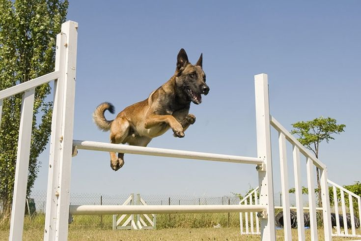
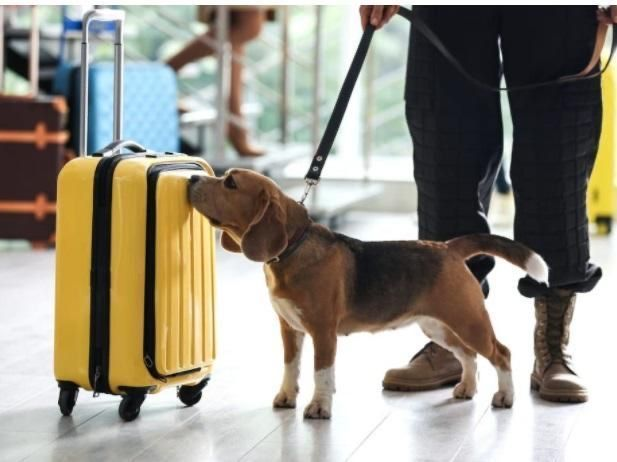
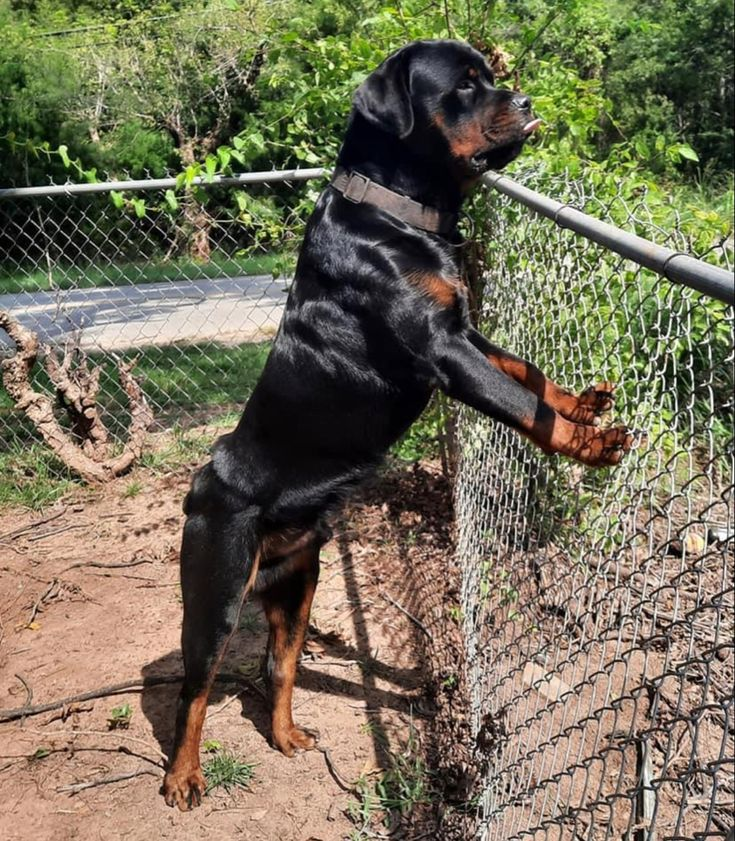

K9 Fleet
Selectively sourced from proven European working bloodlines. Every dog is assessed for drive, temperament and trainability before joining our operational fleet.

Primary Breed
Belgian Malinois
The gold standard of military and law enforcement working dogs worldwide. The Malinois combines extraordinary drive, intelligence, agility and endurance in a compact, athletic frame.
Our Malinois are sourced from proven Belgian and Dutch working bloodlines and undergo rigorous selection screening before training commences. They are the backbone of our patrol, detection and VIP protection operations.
Origin
Belgium
Drive Level
Extreme
Primary Role
Patrol / Detection
Certification
NASDU

Specialist Role
Labrador Retriever
The Labrador's exceptional olfactory capability — estimated at 100,000× more sensitive than a human's — makes it the world's premier detection dog. Their sociable, non-threatening temperament is ideal for high-throughput public environments.
Our detection Labradors are trained to passively indicate on target odours, ensuring minimal disruption during airport, cargo and event screening operations.
Origin
UK / Canada
Drive Level
High — Food Motivated
Primary Role
Detection / SAR
Certification
NASDU · EDD

Guard Specialist
Rottweiler
An imposing physical presence combined with a disciplined, confident temperament makes the Rottweiler our first choice for property guarding and deterrence roles. Few intruders will test a perimeter guarded by a trained Rottweiler.
Our Rottweilers undergo the same rigorous obedience and handler bonding program as all our K9s — ensuring they are safe, controllable and effective in operational environments.
Origin
Germany
Drive Level
High — Guard Instinct
Primary Role
Property Guard
Certification
NASDU · EAKC
All Top Notch Canine K9s are sourced from reputable breeders with verified working pedigrees in Belgium, the Netherlands and Germany. Each animal undergoes a thorough drive assessment, health screening and temperament evaluation before entering our training program. We do not compromise on genetic quality — because operational reliability depends on it.